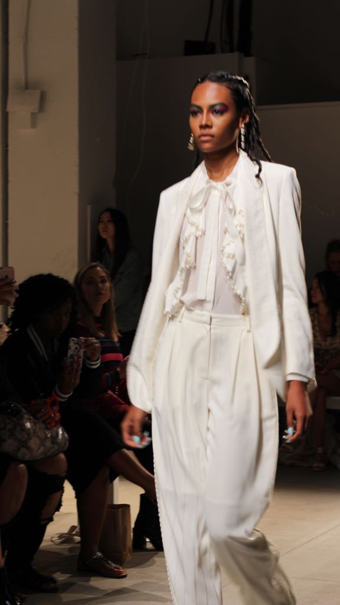
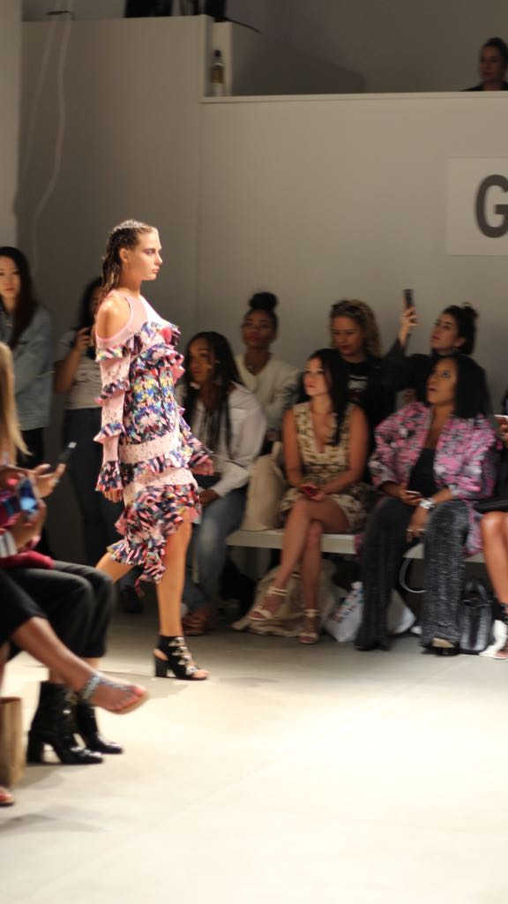

NEW YORK FASHION WEEK
During the New York Fashion week, it’s hard to keep track of all that’s happening. From the best outfits that celebrities have on display, to the nightlife style that’s present in the City that Never Sleeps, it is incredible to see so much happening during such a short period of time. It was also very impressive to see so many celebrities in the Big Apple.
Me and other bloggers visited New York during this amazing week, and we were invited into several fashion shows; of all the ones we saw, my favorite Chris Gelinas’ show. As we can see in the video and the pictures, the collection was very colorful and the textures were simply amazing. Some popular models, such as, Joan Smalls walked for him during runway show. The environment during the show was super fun with music and lights that engaged the people into not only viewing the show, but also interacting with one another. Aside from that show, New York fashion week was a great experience overall. If you are passionate about fashion like me, I genuinely recommend if you have the opportunity to participate in this event. There is much to see and great way of doing networking with people of your interest.
 